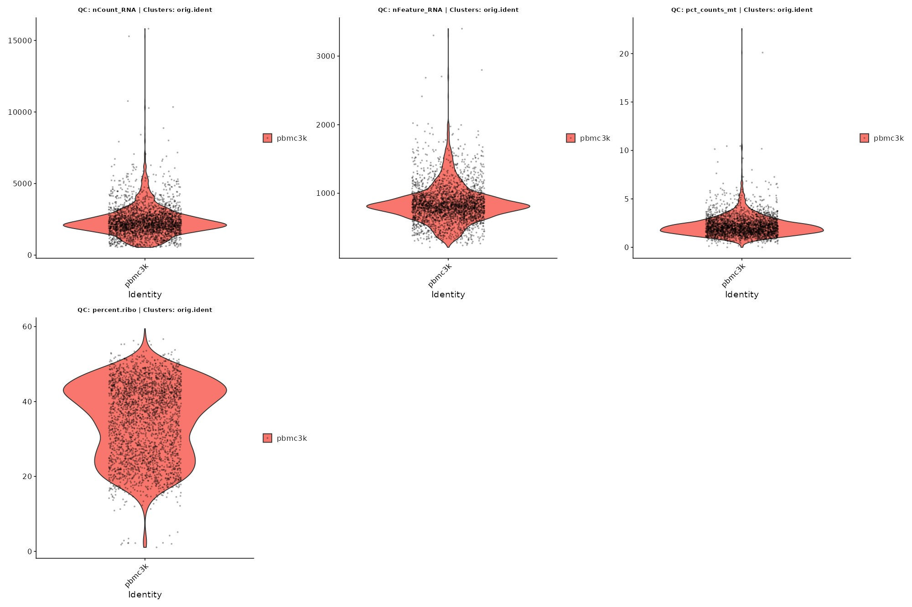
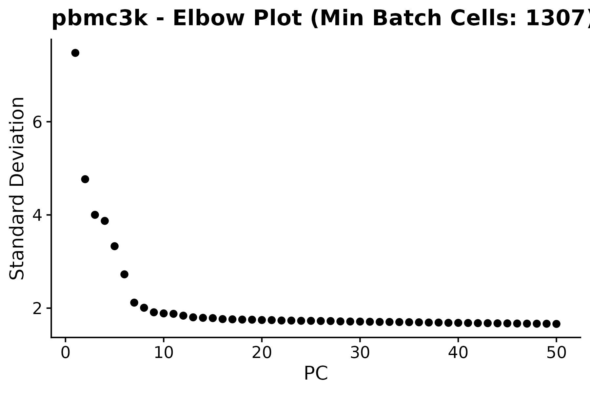
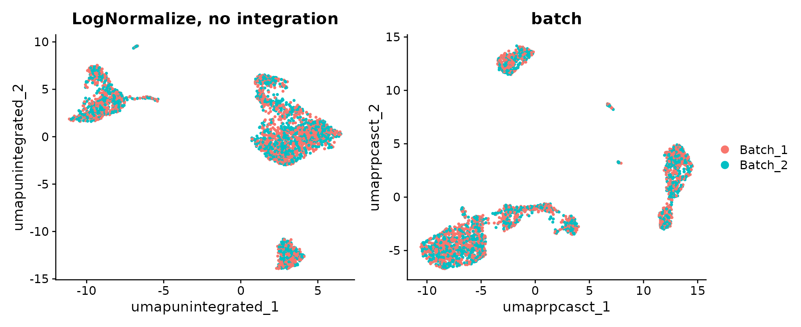
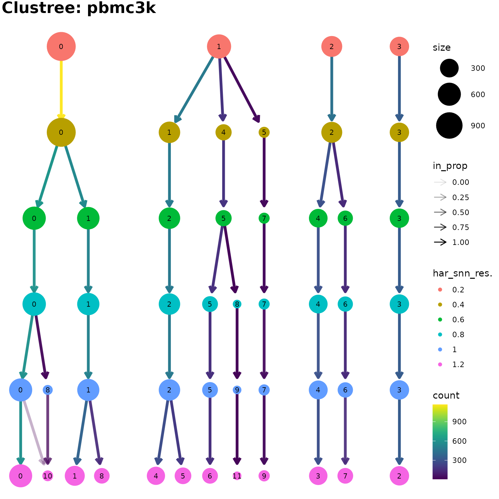
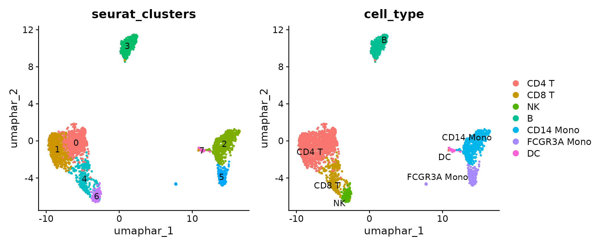

Data Processing, Integration, and Clustering
Chomchon Uansiri
2026-10-06
Source:vignettes/OHMmy-processing-clustering.Rmd
OHMmy-processing-clustering.RmdOverview
This article takes the public 10x Genomics 3k PBMC dataset from a raw count matrix to an integrated, clustered and annotated Seurat v5 object using the OHMmy processing wrappers:
| Step | OHMmy function | What it automates |
|---|---|---|
| QC inspection | plot_violin_qc_single() |
Jittered violin plots of QC metrics, saved to disk |
| Normalisation + integration |
ProcessSeuratLOG() /
ProcessSeuratSCT()
|
Layer splitting, HVG selection, TCR/BCR exclusion, regression, PCA,
IntegrateLayers() with batch-size-aware k
parameters, elbow plot |
| Clustering + UMAP | ClusterAndUMAP() |
Neighbour graph, resolution sweep, clustree stability
plot, final clustering and UMAP |
| Housekeeping | CleanSeuratReductions() |
Renames reductions such as pca.log to Seurat-safe
camelCase keys |
The object produced here is the one used by all other OHMmy articles.
1. Load the data and compute QC metrics
library(Seurat)
library(OHMmy)
library(patchwork)
# Shared helpers: data download/caching, the simulated cohort and figure display
source("ohmmy-vignette-helpers.R")
# SCTransform + anchor-based integration ship large objects to future workers
options(future.globals.maxSize = 4 * 1024^3)
out_dir <- file.path(tempdir(), "OHMmy-processing-clustering")
dir.create(out_dir, recursive = TRUE, showWarnings = FALSE)pbmc3k_counts() reads the filtered feature-barcode
matrix, downloading it once from 10x Genomics if it is not already
available locally.
pbmc <- CreateSeuratObject(pbmc3k_counts(), project = "pbmc3k", min.cells = 3, min.features = 200)
pbmc[["pct_counts_mt"]] <- PercentageFeatureSet(pbmc, pattern = "^MT-")
pbmc[["percent.ribo"]] <- PercentageFeatureSet(pbmc, pattern = "^RP[SL]")
pbmc
#> An object of class Seurat
#> 13714 features across 2700 samples within 1 assay
#> Active assay: RNA (13714 features, 0 variable features)
#> 1 layer present: countsInspect QC distributions
plot_violin_qc_single() overlays faded single-cell
points on Seurat violins so that outliers stay visible. Any metadata
column can be used for grouping; before clustering we simply group by
orig.ident.
plot_violin_qc_single(
seurat_obj = pbmc,
sample_name = "pbmc3k_preQC",
qc_meta_features = c("nCount_RNA", "nFeature_RNA", "pct_counts_mt", "percent.ribo"),
res_col = "orig.ident",
output_dir = out_dir,
dpi = 100
)
Based on these distributions we apply the standard pbmc3k thresholds.
A simulated cohort
pbmc3k comes from one donor. So that the batch-integration, abundance
and pseudo-bulk functions have something to work with,
add_mock_cohort() spreads the cells across 12
simulated donors (Healthy / Mild / Severe, 4 each) that were
sequenced in two batches. Monocyte-like cells are
deliberately over-assigned to Mild and Severe donors, which gives the
statistics articles a known effect to recover. All cohort columns
are synthetic.
pbmc <- add_mock_cohort(pbmc)
table(pbmc$severity, pbmc$batch)
#>
#> Batch_1 Batch_2
#> Healthy 423 379
#> Mild 425 385
#> Severe 483 543
head(pbmc@meta.data[, c("donor_id", "severity", "batch", "age", "sex", "infection_status")])
#> donor_id severity batch age sex infection_status
#> AAACATACAACCAC-1 D03 Healthy Batch_1 28 M Healthy
#> AAACATTGAGCTAC-1 D02 Healthy Batch_2 51 M Healthy
#> AAACATTGATCAGC-1 D10 Severe Batch_2 41 F Infected
#> AAACCGTGCTTCCG-1 D02 Healthy Batch_2 51 M Healthy
#> AAACCGTGTATGCG-1 D01 Healthy Batch_1 34 F Healthy
#> AAACGCACTGGTAC-1 D08 Mild Batch_2 30 M Infected2. Normalisation and batch integration
ProcessSeuratLOG() runs the complete Seurat v5
LogNormalize workflow. It:
- splits the RNA assay into one layer per batch
(
batch_col); - log-normalises the data and selects 2,000 variable features;
- removes TCR/BCR V(D)J genes (
tcr_bcr_patterns) from the variable features, so clustering reflects cell phenotype rather than clonotype; - scales the data while regressing
vars_to_regress; - optionally boosts the variance of lineage markers
(
boost_genes,boost_multiplier), which helps separate look-alike populations such as CD8 T and NK cells; - runs PCA, saves an elbow plot and suggests a number of PCs;
- integrates the layers with Harmony, RPCA, CCA or FastMNN, shrinking
k.weight,k.anchor,k.filterandk.scoreautomatically when a batch is small; - re-joins the layers.
pbmc <- ProcessSeuratLOG(
pbmc,
batch_col = "batch",
vars_to_regress = "pct_counts_mt",
tcr_bcr_patterns = "^TR[ABDG]V|^IG[HKL]V",
reduction_name = "pca.log",
integration_method = "HarmonyIntegration",
integration_reduction = "harmony.log",
dims = 1:30,
elbow_plot_dir = out_dir,
sample_name = "pbmc3k",
verbose = FALSE
)
pbmc
#> An object of class Seurat
#> 13714 features across 2638 samples within 1 assay
#> Active assay: RNA (13714 features, 2000 variable features)
#> 3 layers present: data, counts, scale.data
#> 2 dimensional reductions calculated: pca.log, harmony.log
Reductions(pbmc)
#> [1] "pca.log" "harmony.log"Interactive use. With
interactive_mode = TRUEin an interactive R session, the function pauses after the PCA step so you can choose the number of PCs and the integrationkparameters from the elbow plot.
Cell-cycle scores
Cell-cycle scores are useful covariates for the PC diagnostics in the Diagnostic and Variable Evaluation article.
pbmc <- CellCycleScoring(
pbmc,
s.features = cc.genes.updated.2019$s.genes,
g2m.features = cc.genes.updated.2019$g2m.genes
)
table(pbmc$Phase)
#>
#> G1 G2M S
#> 1168 424 1046Alternative: SCTransform workflow
ProcessSeuratSCT() has the same interface but normalises
with SCTransform. Here it is combined with reciprocal-PCA
integration to show a second integration back-end. It runs on a copy, so
the LogNormalize object is unchanged.
pbmc_sct <- ProcessSeuratSCT(
pbmc,
batch_col = "batch",
vars_to_regress = "pct_counts_mt",
reduction_name = "pca.sct",
integration_method = "RPCAIntegration",
integration_reduction = "rpca.sct",
dims = 1:30,
verbose = FALSE
)
pbmc_sct <- RunUMAP(pbmc_sct, reduction = "rpca.sct", dims = 1:20,
reduction.name = "umap.rpca.sct", verbose = FALSE)
pbmc_tmp <- RunUMAP(pbmc, reduction = "pca.log", dims = 1:20,
reduction.name = "umap.unintegrated", verbose = FALSE)
DimPlot(pbmc_tmp, reduction = "umap.unintegrated", group.by = "batch") +
ggplot2::ggtitle("LogNormalize, no integration") +
DimPlot(pbmc_sct, reduction = "umap.rpca.sct", group.by = "batch") +
ggplot2::ggtitle("SCTransform + RPCA") +
plot_layout(guides = "collect")
Because the batches in this example are simulated, both embeddings mix the batches. In real data the integrated embedding should mix batches while keeping cell types separate.
3. Clustering across resolutions
ClusterAndUMAP() builds the shared-nearest-neighbour
graph, clusters across a range of resolutions, draws a
clustree plot to show how clusters split as the resolution
increases, then runs the final clustering and UMAP. Graphs and
resolutions that already exist are reused unless
force_neighbors or force_clustering is
TRUE.
clus <- ClusterAndUMAP(
seurat_obj = pbmc,
sample_name = "pbmc3k",
reduction = "harmony.log",
dims = 1:20,
k.param = 20,
umap_name = "umap.har",
graph_name = "har_snn",
cluster_prefix = "har_snn_res.",
cluster_resolutions = seq(0.2, 1.2, by = 0.2),
final_resolution = 0.6,
plot_dir = out_dir,
dpi = 100
)
pbmc <- clus$seuratThe function returns the updated object, the clustree
ggplot and the path of the saved figure:
names(clus)
#> [1] "seurat" "clustree" "plot_file"
clus$clustree
Between resolutions 0.6 and 1.0 almost every cluster has a single parent, so the partition is stable. Further splits appear only at 1.2. We use 0.6, where the major PBMC lineages are already resolved, as the working resolution.
pbmc$seurat_clusters <- pbmc$har_snn_res.0.6
table(pbmc$seurat_clusters)
#>
#> 0 1 2 3 4 5 6 7
#> 614 554 478 341 298 178 141 344. Annotation
For a self-contained tutorial, clusters are labelled from canonical
PBMC markers: each cluster receives the cell type whose module score
(Seurat::AddModuleScore()) is highest. The helper
annotate_pbmc() is defined in
ohmmy-vignette-helpers.R. In your own data, replace this
step with your preferred annotation strategy, such as reference mapping
or manual curation.
str(pbmc_marker_sets)
#> List of 8
#> $ CD4 T : chr [1:5] "IL7R" "CCR7" "LDHB" "CD3E" ...
#> $ CD8 T : chr [1:4] "CD8A" "CD8B" "CD3D" "GZMK"
#> $ NK : chr [1:6] "GNLY" "NKG7" "GZMB" "PRF1" ...
#> $ B : chr [1:4] "MS4A1" "CD79A" "CD79B" "CD19"
#> $ CD14 Mono : chr [1:4] "CD14" "LYZ" "S100A8" "S100A9"
#> $ FCGR3A Mono: chr [1:4] "FCGR3A" "MS4A7" "LST1" "IFITM2"
#> $ DC : chr [1:3] "FCER1A" "CST3" "CLEC10A"
#> $ Platelet : chr [1:3] "PPBP" "PF4" "GNG11"
pbmc <- annotate_pbmc(pbmc, cluster_col = "seurat_clusters")
table(pbmc$seurat_clusters, pbmc$cell_type)
#>
#> CD4 T CD8 T NK B CD14 Mono FCGR3A Mono DC
#> 0 614 0 0 0 0 0 0
#> 1 554 0 0 0 0 0 0
#> 2 0 0 0 0 478 0 0
#> 3 0 0 0 341 0 0 0
#> 4 0 298 0 0 0 0 0
#> 5 0 0 0 0 0 178 0
#> 6 0 0 141 0 0 0 0
#> 7 0 0 0 0 0 0 34
DimPlot(pbmc, reduction = "umap.har", group.by = "seurat_clusters", label = TRUE) + NoLegend() +
DimPlot(pbmc, reduction = "umap.har", group.by = "cell_type", label = TRUE, repel = TRUE) + NoLegend()
5. Standardising reduction names
Reductions named with dots or underscores (such as
pca.log) are valid in Seurat v5, but some tools expect keys
that match the reduction name exactly.
CleanSeuratReductions() rebuilds every reduction under a
camelCase name with a matching key. It is shown on a copy, because the
remaining articles use the original names.
pbmc_clean <- CleanSeuratReductions(pbmc)
data.frame(
before = Reductions(pbmc),
after = Reductions(pbmc_clean)[match(c("pcaLog", "harmonyLog", "umapHar"), Reductions(pbmc_clean))]
)
#> before after
#> 1 pca.log pcaLog
#> 2 harmony.log harmonyLog
#> 3 umap.har umapHar
Key(pbmc_clean[["umapHar"]])
#> [1] "umapHar_"6. Saving the object
Every other OHMmy article reuses this object.
load_pbmc3k_ohmmy() (in
ohmmy-vignette-helpers.R) runs exactly the steps above and
caches the result, so later articles start immediately. To save your own
object, use saveRDS() or the save_path
argument of ClusterAndUMAP().
saveRDS(pbmc, "pbmc3k_processed.rds")Session information
sessionInfo()
#> R version 4.6.1 (2026-06-24)
#> Platform: x86_64-pc-linux-gnu
#> Running under: Ubuntu 22.04.5 LTS
#>
#> Matrix products: default
#> BLAS: /usr/lib/x86_64-linux-gnu/openblas-pthread/libblas.so.3
#> LAPACK: /usr/lib/x86_64-linux-gnu/openblas-pthread/libopenblasp-r0.3.20.so; LAPACK version 3.10.0
#>
#> locale:
#> [1] LC_CTYPE=C.UTF-8 LC_NUMERIC=C LC_TIME=C.UTF-8
#> [4] LC_COLLATE=C.UTF-8 LC_MONETARY=C.UTF-8 LC_MESSAGES=C.UTF-8
#> [7] LC_PAPER=C.UTF-8 LC_NAME=C LC_ADDRESS=C
#> [10] LC_TELEPHONE=C LC_MEASUREMENT=C.UTF-8 LC_IDENTIFICATION=C
#>
#> time zone: UTC
#> tzcode source: system (glibc)
#>
#> attached base packages:
#> [1] stats graphics grDevices utils datasets methods base
#>
#> other attached packages:
#> [1] ggraph_2.2.2 future_1.76.0 patchwork_1.3.2 OHMmy_1.0.2
#> [5] Seurat_5.6.0 SeuratObject_5.4.0 sp_2.2-3
#>
#> loaded via a namespace (and not attached):
#> [1] RColorBrewer_1.1-3 jsonlite_2.0.0 magrittr_2.0.5
#> [4] ggbeeswarm_0.7.3 spatstat.utils_3.2-5 farver_2.1.2
#> [7] rmarkdown_2.32 fs_2.1.0 ragg_1.5.2
#> [10] vctrs_0.7.3 ROCR_1.0-12 memoise_2.0.1
#> [13] spatstat.explore_3.8-3 rstatix_1.1.0 htmltools_0.5.9
#> [16] broom_1.0.13 Formula_1.2-6 sass_0.4.10
#> [19] sctransform_0.4.3 parallelly_1.48.0 KernSmooth_2.23-26
#> [22] bslib_0.12.0 htmlwidgets_1.6.4 desc_1.4.3
#> [25] ica_1.0-3 plyr_1.8.9 plotly_4.12.1
#> [28] zoo_1.9-1 cachem_1.1.0 igraph_2.3.4
#> [31] mime_0.13 lifecycle_1.0.5 pkgconfig_2.0.3
#> [34] Matrix_1.7-5 R6_2.6.1 fastmap_1.2.0
#> [37] fitdistrplus_1.2-6 shiny_1.14.0 digest_0.6.39
#> [40] tensor_1.5.1 RSpectra_0.16-2 irlba_2.4.1
#> [43] textshaping_1.0.5 ggpubr_1.0.0 labeling_0.4.3
#> [46] progressr_1.0.0 spatstat.sparse_3.2-0 httr_1.4.9
#> [49] polyclip_1.10-7 abind_1.4-8 compiler_4.6.1
#> [52] withr_3.0.3 S7_0.2.2 backports_1.5.1
#> [55] viridis_0.6.5 carData_3.0-6 fastDummies_1.7.6
#> [58] R.utils_2.13.0 ggforce_0.5.0 ggsignif_0.6.4
#> [61] MASS_7.3-65 tools_4.6.1 vipor_0.4.7
#> [64] lmtest_0.9-40 otel_0.2.0 beeswarm_0.4.0
#> [67] httpuv_1.6.17 future.apply_1.20.2 goftest_1.2-3
#> [70] R.oo_1.27.1 glue_1.8.1 nlme_3.1-169
#> [73] promises_1.5.0 grid_4.6.1 checkmate_2.3.4
#> [76] Rtsne_0.17 cluster_2.1.8.2 reshape2_1.4.5
#> [79] generics_0.1.4 clustree_0.5.1 gtable_0.3.6
#> [82] spatstat.data_3.1-9 R.methodsS3_1.8.2 tidyr_1.3.2
#> [85] data.table_1.18.6.1 tidygraph_1.3.1 car_3.1-5
#> [88] spatstat.geom_3.8-3 RcppAnnoy_0.0.23 ggrepel_0.9.8
#> [91] RANN_2.6.3 pillar_1.11.1 stringr_1.6.0
#> [94] spam_2.11-4 RcppHNSW_0.7.0 later_1.4.8
#> [97] splines_4.6.1 tweenr_2.0.3 dplyr_1.2.1
#> [100] lattice_0.22-9 survival_3.8-6 deldir_2.0-4
#> [103] tidyselect_1.2.1 miniUI_0.1.2 pbapply_1.7-5
#> [106] knitr_1.52 gridExtra_2.3.1 SoupX_1.6.2
#> [109] scattermore_1.2 RhpcBLASctl_0.23-42 xfun_0.61
#> [112] graphlayouts_1.2.5 matrixStats_1.5.0 leidenbase_0.1.37
#> [115] stringi_1.8.9 yaml_2.3.12 evaluate_1.0.5
#> [118] codetools_0.2-20 tibble_3.3.1 cli_3.6.6
#> [121] uwot_0.2.5 xtable_1.8-8 reticulate_1.47.0
#> [124] systemfonts_1.3.2 jquerylib_0.1.4 harmony_2.0.5
#> [127] Rcpp_1.1.2 globals_0.19.1 spatstat.random_3.5-2
#> [130] png_0.1-9 ggrastr_1.0.2 spatstat.univar_3.2-0
#> [133] parallel_4.6.1 pkgdown_2.2.1 ggplot2_4.0.3
#> [136] dotCall64_1.2 jpeg_0.1-11 listenv_1.1.0
#> [139] viridisLite_0.4.3 scales_1.4.0 ggridges_0.5.7
#> [142] purrr_1.2.2 rlang_1.3.0 cowplot_1.2.0